All News
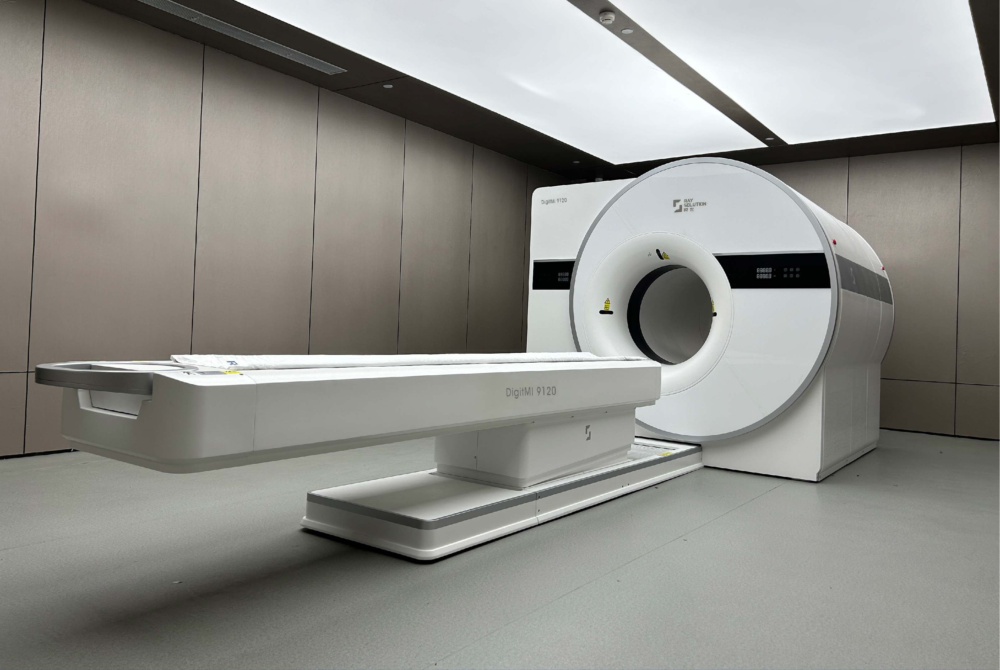
The new domestically developed ApexMI all-digital PET/CT series debuted in Yichang, offering 1.3-mm image precision and a 60-second whole-body scan.
SPROUT, developed by Digital PET Laboratory and University of Notre Dame researchers, is a vine robot capable of navigating under collapsed structures.
Tongji Hospital and the Digital PET Laboratory jointly developed a helmet-style all-digital PET system for real-time dynamic brain imaging in different body positions.
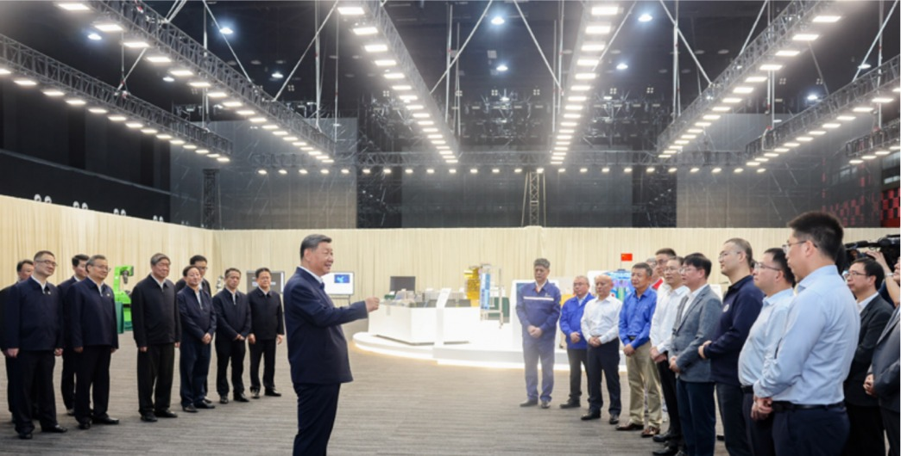
During an inspection in Anhui, Xi Jinping visited an exhibition of major scientific and technological achievements at Hefei Binhu Science City and spoke with researchers and business representatives.
Xi Jinping viewed an exhibition of major scientific and technological achievements at Hefei Binhu Science City and spoke with researchers and business representatives.
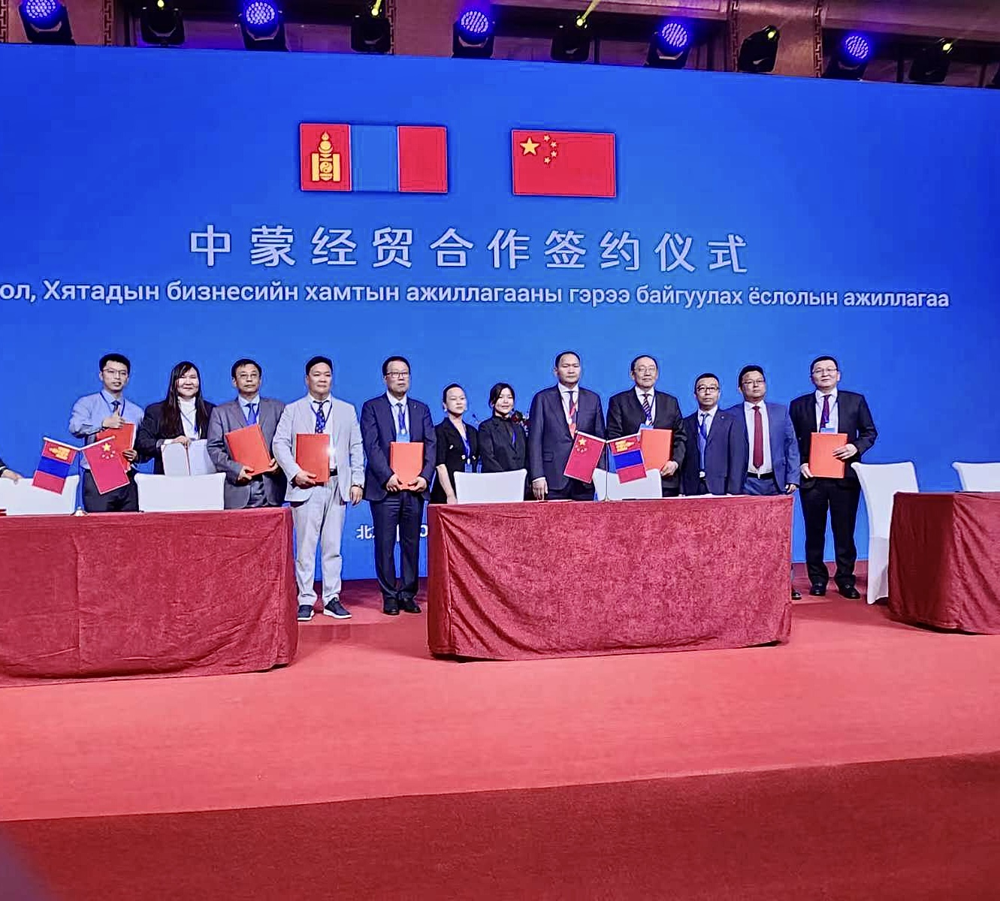
Recently, Ruishi Medical, a digital PET industrialization unit located in Wuhan, signed a formal contract with the Fourth Hospital of Mongolia, realizing the first overseas sales of clinical all-digital PET medical equipment...
China has successfully developed the second generation of "digital PET" single-bed scanning imaging 20 seconds Zhou Wen January 7, 2023 10:14 | Source: People's Daily - Hubei Channel Small Font Size Recently, a new generation of all-digital PET/CT developed by the digital PET team of Huazhong University of Science and Technology, model DigitMI 930, passed the China Medical Device Registration Certification and was officially approved to enter the market...
On July 19, the World Intellectual Property Organization (WIPO) held a ceremony at its headquarters in Geneva, Switzerland to award the global prize for small and medium-sized enterprises.
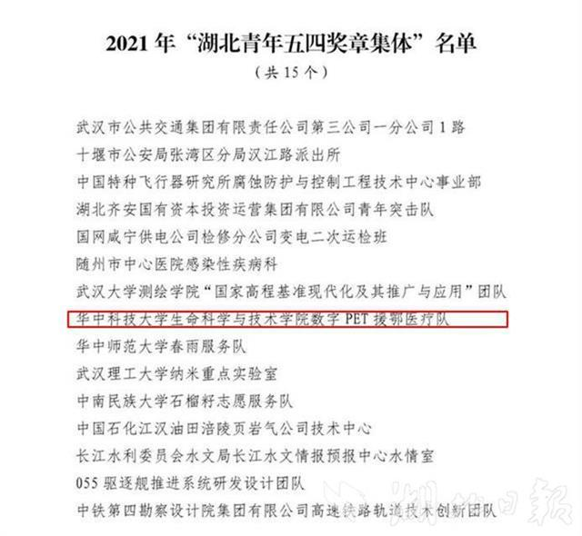
In the 2021 "Hubei Youth May Fourth Medal" commendation list, the Digital PET Aid Medical Team of the School of Life Science and Technology of Huazhong University of Science and Technology was selected as one of the 15 winning groups...
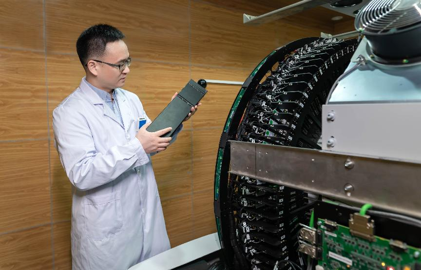
Liu Zhiwei, correspondent of Science and Technology Daily, Yang Ya, learned from Huazhong University of Science and Technology on April 8 that the world's first clinical all-digital PET invented by the university's Xie Qingguo team was put into trial operation in Ezhou Central Hospital in Hubei Province last June...
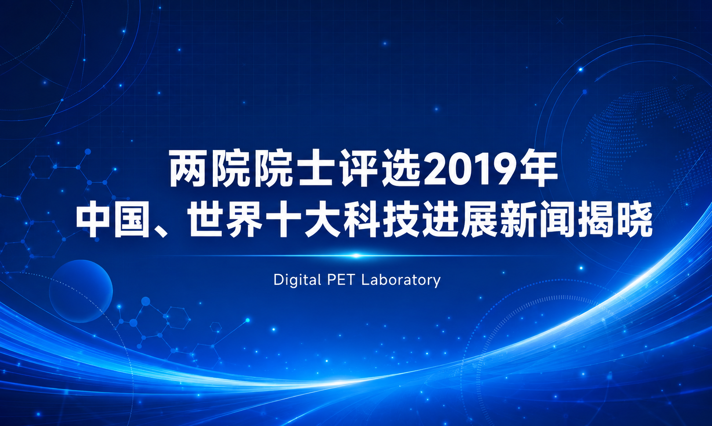
Sponsored by the Chinese Academy of Sciences and the Chinese Academy of Engineering, and hosted by the Work Bureau of the Faculty of the Chinese Academy of Sciences, the General Office of the Chinese Academy of Engineering, the Chinese Science Newspaper, and voted by the academicians of the Chinese Academy of Sciences and the Chinese Academy of Engineering, the 2019 Top Ten Science and Technology Progress News and the World Top Ten Science and Technology Progress News were announced in Beijing on January 11...

version 01) Yang Ya, a correspondent for Liu Zhiwei, a reporter of this newspaper, recently announced the "Notice on the Release of Quasi-production Approval Documents" on the website of the State Drug Administration, and the "Positron Emission and X-ray Computerized Tomography Scanning System" (hereinafter referred to as "All-Digital PET") is on the list...
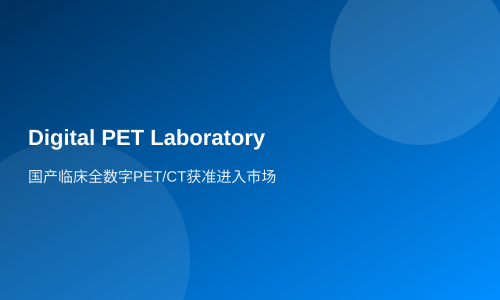
Wuhan, June 7 (Reporter Li Wei) The all-digital PET/CT invented by the team of Professor Xie Qingguo of Huazhong University of Science and Technology has recently passed the registration examination and approval of the State Drug Administration, and obtained market access and foreign sales qualifications...
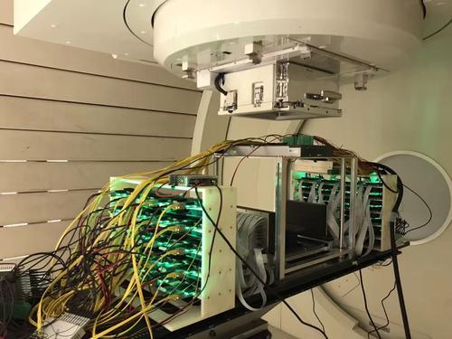
the latest research results of Xie Qingguo, a Chinese scientist and professor at Huazhong University of Science and Technology, were published online in Sensors, an international authoritative journal in the field of engineering and technology, entitled "A positron emission tomography system for proton therapy monitoring...
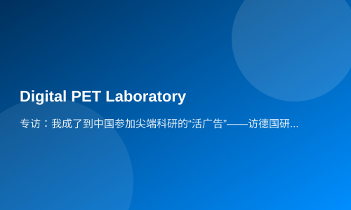
Germany, Rüsselsheim, March 17 Interview: I became a "live advertisement" to participate in cutting-edge scientific research in China - Nikola Miller, a graduate student visiting Germany, Xinhua News Agency reporter Zhang Yirong "I am now a" live advertisement "of the school, the school and I hope that more students will choose to participate in international cutting-edge science and technology in China...
From the digital PET team of Huazhong University of Science and Technology, the Digital PET Morise Research Center established in Italy officially welcomed its first doctoral student this month - Emanuele, a 27-year-old Italian, who will study for a doctorate at Huazhong University of Science and Technology in September this year...

News (correspondent Wang Xiaoxiao) On April 1, Beijing time, good news was uploaded from the Geneva International Invention Exhibition in Switzerland: Huazhong University of Science and Technology selected 7 projects to participate in the 2017 Geneva International Invention Exhibition and won a slam score of 6 gold and 1 silver...

■The latest discovery and innovation science and technology daily Wuhan April 27 (reporter Liu Zhiwei correspondent Wang Xiaoxiao) only takes 5 minutes to do a full-body test on the patient, and only takes about half the time of traditional equipment...
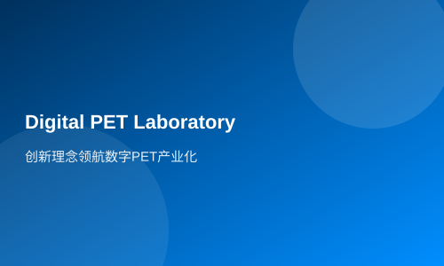
Medical device innovation in China "detects invisible rays, turns them into PET images and radiation data; industrializes invisible knowledge and technology, and makes it truly serve society...
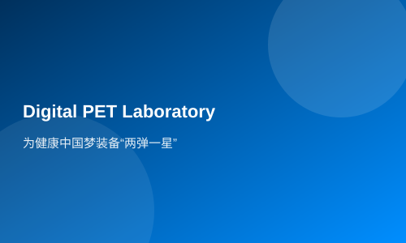
The Apocalypse of Innovation mentions cancer, and people are always full of fear...

The reporter learned from Wuhan Optoelectronics National Laboratory (Preparation) on December 10 that Xie Qingguo, a professor at Huazhong University of Science and Technology, led a scientific research team to successfully develop the world's first digital positron emission tomography (PET)...
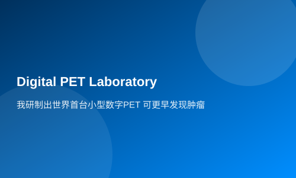
A small-animal PET prototype developed by the Digital PET team at Huazhong University of Science and Technology produced high-resolution images, marking the successful development of an all-digital flat-panel PET system.